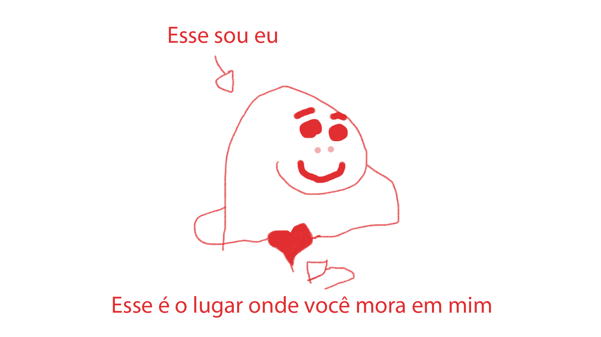
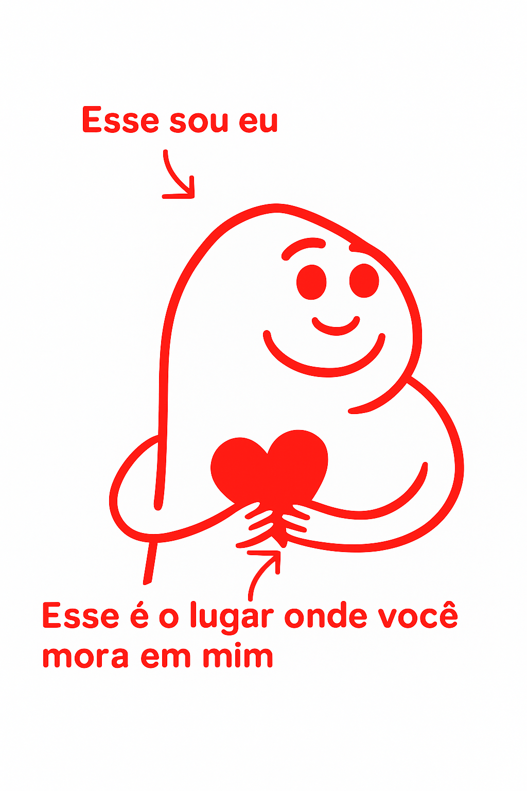

Ana, fiz isso aqui pensando em você e para você. Como eu tinha dito, que com nenhum idioma do mundo eu seria capaz de expressar o quanto você é especial para mim e me faz feliz, tive a ideia fazer isso. Espero que goste 😊
Esse primeiro desenho foi o que eu fiz no photoshop. Juro que dei meu melhor kkkkk

Aí como tava muito feio pedi para uma I.A melhorar ele pra mim e esse foi o resultado:

Essas flores, são para você, Ana. Essa foi a melhor forma que eu consegui pensar para expressar o quão especial você é para mim e me faz feliz. Gratidão por estar na minha vida, Ana Carolina. Você a tornou muito melhor desde o dia em que nos conhecemos. E me desculpa se as vezes fui chato, difícil de aturar, falei demais ou algo assim. Espero que tenha gostado 😊. Esse projeto foi feito com carinho e ❤️.
P.s: Estou com saudades. Não vejo a hora de poder te ver novamente.